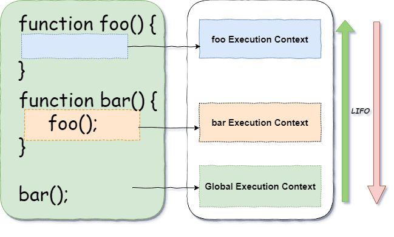

Vanilla JS - co to jest?
Vanilla JS is a fast, lightweight, cross-platform framework for building incredible, powerful JavaScript applications.
Super kolejny frmework do nauki... Sprawdźmy więc z czym to się je. Aby zacząć zabawę z tym frameworkiem musimy stworzyć nowy plik np: vanilla.js. Naszym oczom ukazuje się .... pusty plik. :) Tak bo VanillaJS to po prostu czysty JavaScript!
Nie ma co ukrywać, że jest to największa wydajność. Tym bardziej, że coraz częściej początkujący developerzy znają jedynie jQuery, a niczego w pure js nie potrafią napisać. Z jednej strony rozumiem, jQuery wiele ułatwia, ale warto znać zasadę jego działania, dlaczego tak a nie inaczej. No i to jest ciekawe, że można znać framework do języka, którego się nie zna i nie potrafi zastosować samego.
Środowisko pracy
Środowisko pracy dla JavaScript - kiedyś JS kojarzył się wyłącznie z prostymi onclick-ami na buttonach czy innych trywialnymi sprawami. Dziś jednak JS stał się tak popularny, że można spotkać go praktycznie wszędzie. Od Mikrokontrolerów przez różne systemy operacyjne, oprogramowanie stacjonarne / serwery WWW po rzeczy tak odjechane jak pulpity sterowania / wyświetlaczy samochodów. Wszystko to dzięki node.js . Owszem, żeby zacząć zabawę z JS nie musimy nic instalować poza przeglądarką ( otwieramy konsolę i możemy zacząć swoją przygodę ). Natomiast dla wszystkich pozostałych miejsc zastosujemy node.js, które da nam możliwość do tworzenia swoich rozwiązań w JS stacjonarnie.
Odrobina magii - czyli w kilku krokach jak kod JS staje się zrozumiały dla systemu, na którym jest uruchamiany.
W dużym uproszczeniu można powiedzieć, że parsowanie polega na zamianie danych tekstowych (wejście) na odpowiadającą im strukturę obiektową (wyjście). Jest to przeciwieństwo (ale nie odwrotność) serializacji.
Execution context
Kontekst wywołania, w JS ma dość duże znaczenie. W istocie rozróżniamy dwa konteksty globalny oraz lokalny.
- Kod nie jest ograniczony żadną funkcją
- Znajduje się w globalnym obiekcie
- W przypadku przeglądarki jest to obiekt "window" czyli test === window.test
- Kod jest ograniczony funkcją wywołania
- Ma dostęp do zmiennych zewnętrznych z tego samego kontekstu w jakim został wywołany
Każde wywołanie funkcji tworzy swój własny kontekst wywołania i jest przesyła na górę stosu wywołania. ( Execution stack )

Funkcje w JS tworzą swoje konteksty wywołania. Dodatkowo należy pamiętać, że każda funkcja ma swój zakres dostępu a mianowicie wywołana funkcja ma dostęp do swoich lokalnych zmiennych oraz zmiennych rodzica.
Poniższy przykład posłuży nam do zbadania zasięgu zmiennych oraz przedyskutujemy kwestię domknięć.
function test() {
var name = 'Kuba';
function showName() {
// console.log(name)
windowContext(name);
}
showName();
}
function windowContext(namez) {
console.log(namez);
}
test();
Hoisting
Hoisting - to dziwne słowo nie jest takie straszne na jakie wygląda. Mianowicie podczas wywoływania funkcji, silnik skanuje ciało wywołania w poszukiwaniu wszelkich deklaracji, funkcji zmiennych etc. Kiedy znajdzie funkcję to prznosi deklarację tej funkcji na sam początek i definiuje wskaźnik do niej. W momencie znalezienia zmiennej automatycznie zostaje przypisana do niej wartość undefined, właściwa wartość zmiennej jest przypisywana w linii definicji
// Hoisting
function test() {
console.log('Jupii!!!');
}
console.log(test());
// da taki sam rezultat jak poniżej
console.log(test());
function test() {
console.log('Jupii!!!');
}
// Hoisting zmiennych
var test = function() {
console.log('Jupii!!! zmienna');
}
test();
// juz nie będzie tak kolorowo
test();
var test = function() {
console.log('Jupii!!! zmienna');
}
// inny przyklad
console.log(a);
var a = 'test';
Scope Chain
Scope chain - Każda nowa funkcja tworzy swój scope ("zakres"). JS < es5 ma zakres funkcyjny, es6 > ma zakres blokowy. Warto pamiętać o tej różnicy
var a = 'Hi!';
firstFunc();
function firstFunc() {
var b = 'Czesc!';
secFunc();
function secFunc() {
var c = 'Bonjour!';
console.log('a: ' + a + ', b: ' + b + ', c: ' + c);
withoutLexicalScopeConnection()
}
}
function withoutLexicalScopeConnection() {
console.log('a: ' + a + ', b: ' + b + ', c: ' + c + '!');
}
secFunc, wyświetli poprawnie wszystkie trzy zmienne dzięki mechanizmowi "Scope Chain". Zasada działania jest prosta, jeżeli JS nie znajdzie zmiennej, którą ma wywołać w lokalnym zakresie zmiennych (local Variable object), wyjdzie o jeden poziom wyżej do rodzica, jeżeli zaś rodzic nie będzie miał takiej alokacji zmiennej pójdzie znów wyżej i tak dalej. Dopiero kiedy nie znajdzie wartości zmiennej w globalnym zakresie zmiennych, silnik JS zwróci błąd.
Dodatkowo co ważne, zakres rodzica nie widzi zmiennych, funkcji swoich dzieci. Żeby mieć dostęp do zmiennych lub funkcji funkcji zagnieżdżonych w funkcjach lokalnych, funkcja lokalna musi zwrócić daną własność